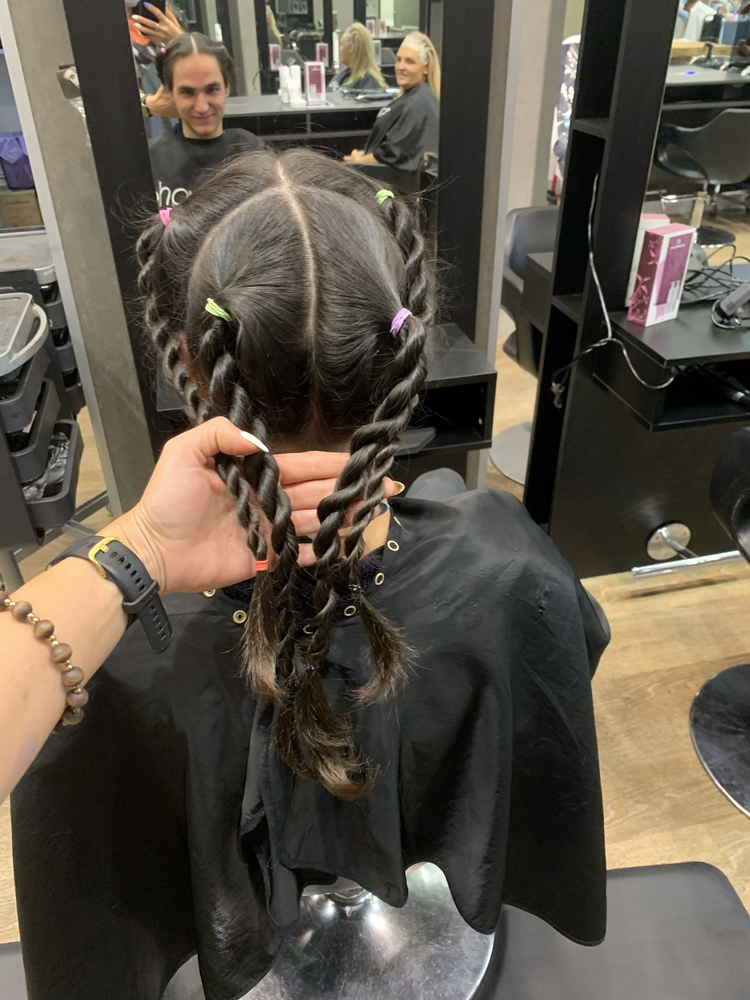
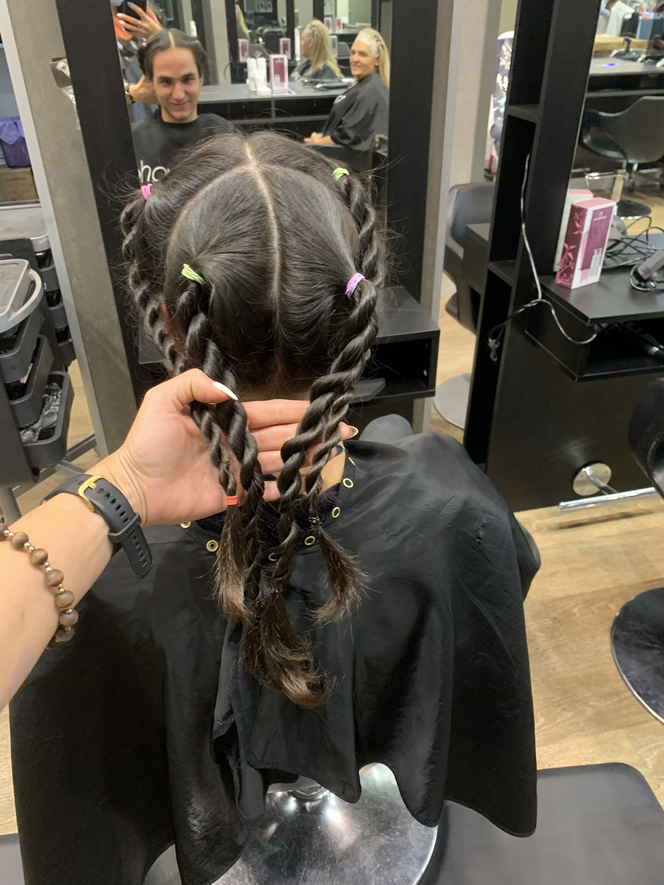

My Long Hair
Whenever I tell people that haven’t known me for 3+ years I had long hair, they are often perplexed as to how that would look on me. This is for those people. For better or worse, I had my hair down to my nipples at one stage.
When it was time to cut it all off (Jan 2021), I decided it should go to a good cause.
I requested that the hairdresser make it into braids so that I could send it off to a foundation that makes wigs for sick people.
#IMissIt #ItsNotWorthItBoys
I highly recommend that you do this at lease once in your life time as a dude. Its super fun and a bit of a journey.


 
